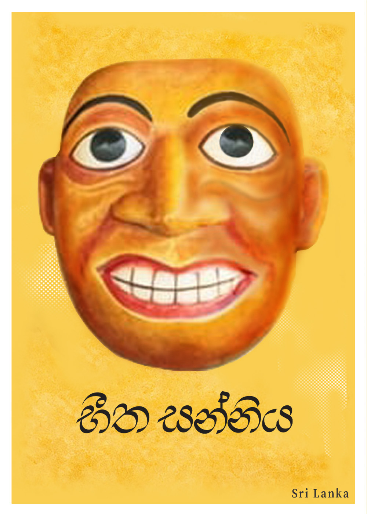
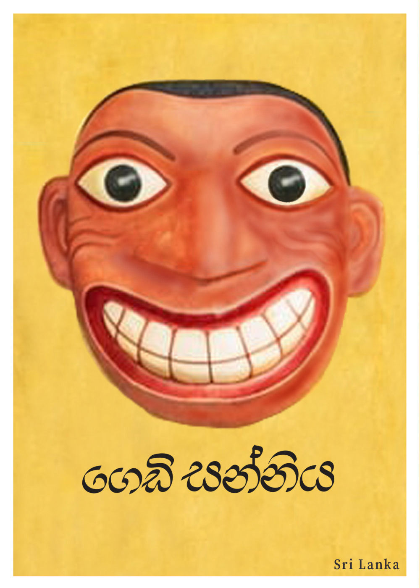
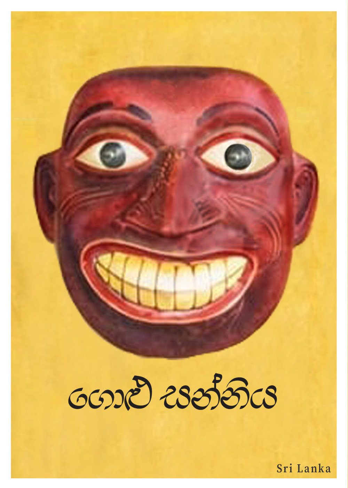
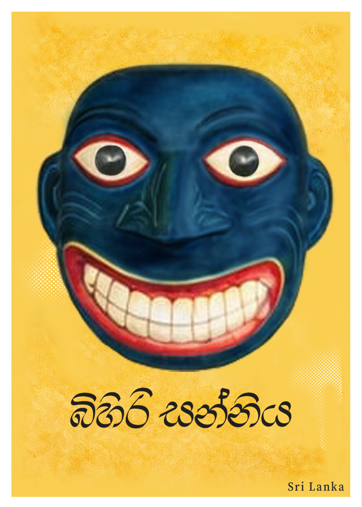
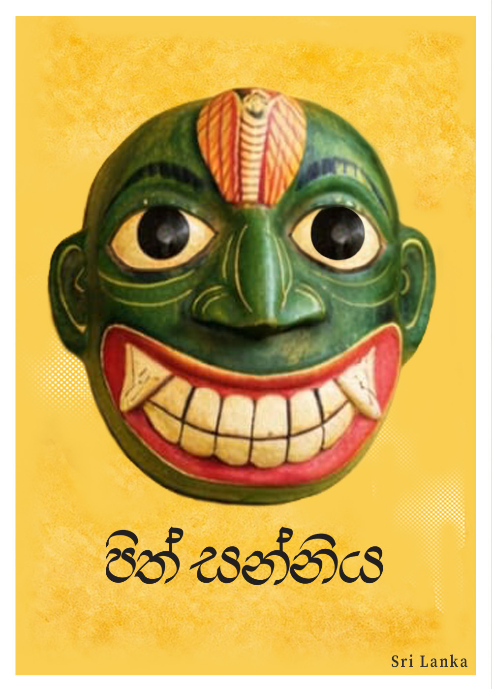
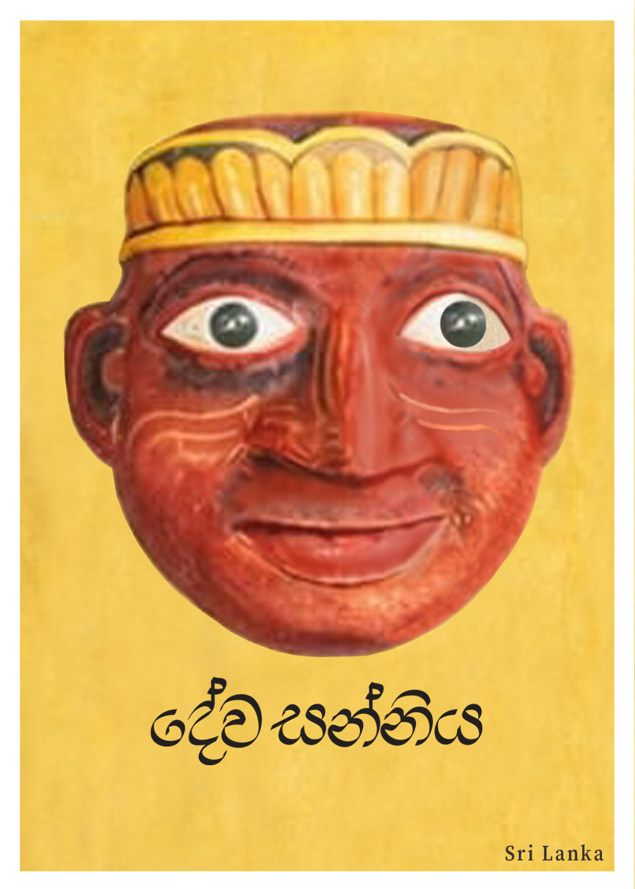
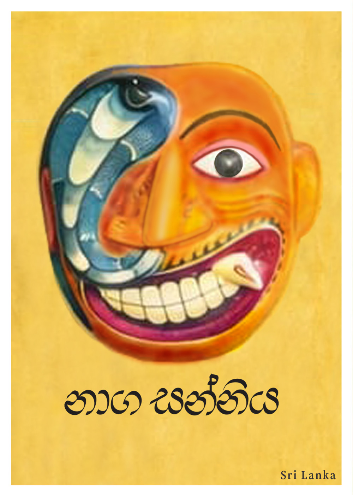

ජල සන්නිය
Jala Sanniya: The Spirit of Chilling Winds
Cold as midnight rain, Jala shakes the body with icy tremors. Ritual fire glows brighter, melting his frost.
ගුල්ම සන්නිය
Gulma Sanniya: The Twister of Entrails
Gulma knots the body from within. Herbal wisdom and sacred rhythm unravel his grip. Relief follows resilience.
කොර සන්නිය
Kora Sanniya: The Lame Wanderer
Dragging his shadowed limb, Kora steals strength from bone and muscle. Yet laughter and mockery weaken him during ritual drama.

බීත සන්නිය
Beetha Sanniya: The Troubler of Minds
Restless and whispering, Hitha unsettles thought and clouds reason. Yet drumbeat and chant weave clarity from confusion.
ගිනිජාල සන්නිය
Gini Jala Sanniya: The Fire of Fever
Forged in flame, Gini Jala scorches flesh with burning heat. Sacred waters cool his fire, and ritual dance tames his rage.
පිස්සු සන්නිය
Pissu Sanniya: The Disturber of Thought
Pissu stirs emotion into turmoil. But the steady heartbeat of ritual drums anchors the mind. Calm replaces confusion.

ගෙඩි සන්නිය
Gedi Sanniya: The Bringer of Swellings
Rising beneath the skin, Gedi marks the body with pain and swelling. Through masked dance and ancient invocation, suffering softens.

ගොළු සන්නිය
Golu Sanniya: The Stealer of Speech
Golu traps words in the throat and thoughts remain unspoken. Yet the healer's commanding voice restores speech and expression.
භූත සන්නිය
Butha Sanniya: The Possessing Spirit
A shadow-walker of restless minds, Butha clouds reason and disturbs thought. Fearless invocation restores clarity to the human spirit.
කන සන්නිය
Kana Sanniya: The Blinder of Light
Kana dims sight and cloaks the world in darkness. Through sacred fire and chant, vision—both outer and inner—is reborn.

බිහිරි සන්නිය
Bihiri Sanniya: The Bringer of Silence
He seals the ears against the world's music. But drums thunder like monsoon skies, breaking his silence and restoring sound.
අමුක්කු සන්නිය
Amukku Sanniya: The Demon of Nausea
Born from excess, Amukku churns the stomach like a storm-tossed sea. Ritual chants and fire restore balance to body and soul.
මරු සන්නිය
Maru Sanniya: The Shadow of Mortality
Maru reminds mortals of life's fragility. Through sacred appeal, his presence teaches reverence for time and existence.
වාත සන්නිය
Watha Sanniya: The Wind Within
Invisible yet powerful, Vatha moves through joints like restless air. Balance of elements drives him away, restoring harmony.

පිත් සන්නිය
Pith Sanniya: The Fire Within
Burning with unseen heat, Pith stirs fever through the body. Ritual prayer, rhythm, and offerings cool the flames.
කෝල සන්නිය
Kola Sanniya: The Breaker of Strength
Heavy-limbed and stilling, Kola weakens movement and vitality. With blessing and sacred steps, strength awakens once more.

දේව සන්නිය
Deva Sanniya: The Divine Messenger
When moral paths falter, Deva reminds humanity of sacred law. Ritual restores spiritual harmony—and with it, health.

නාග සන්නිය
Naga Sanniya: The Serpent Afflicter
Venomous and swift, Naga strikes unseen. Ancient chants invoke serpent guardians to neutralize his poison and restore balance.